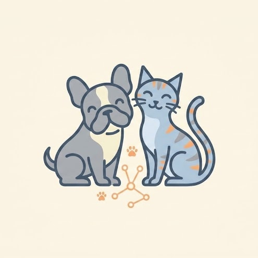
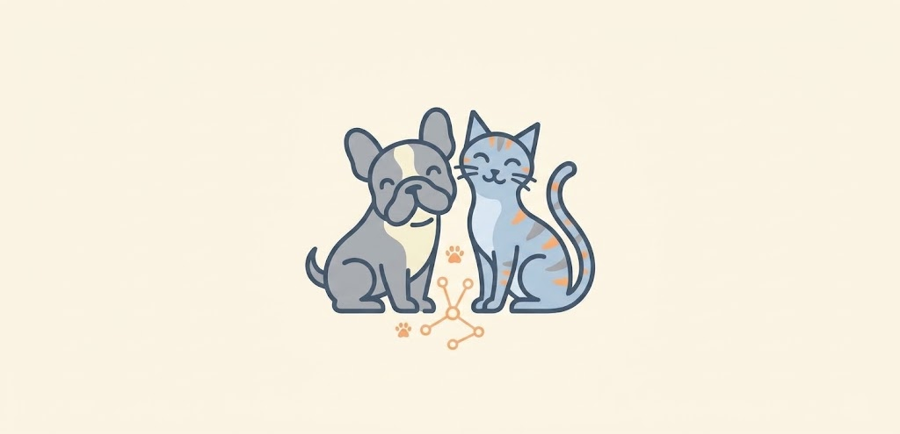

1. Elige una foto
Usa una imagen guardada o toma una nueva con la cámara.

PetVisionSube una foto o usa la cámara y deja que la IA adivine en un abrir y cerrar de ojos.

Arrastra una foto o toca para elegirla. Solo aceptamos fotos de perros o gatos.
Arrastra una foto aquí o toca para elegirla
JPG, PNG, WEBP o GIF — hasta 12 MB
Preparando el modelo de IA…
La predicción y su nivel de confianza.
Aún no lo sabemos
La primera carga puede tardar unos segundos. Tras eso, funciona sin conexión.
Iniciando…
Tres pasos, sin cuentas ni subida a servidores.
Usa una imagen guardada o toma una nueva con la cámara.
El modelo y la comprobación se ejecutan 100% en tu dispositivo.
Mira la clase, el porcentaje de confianza y las barras comparativas.
Tu privacidad importa: la imagen no se envía a ningún servidor.
Este proyecto usa una red neuronal convolucional entrenada para distinguir perros y gatos. Antes de clasificar, un detector de objetos comprueba que aparezca una mascota.
Explorar el cuaderno de entrenamientoBIENVENIDO
Sube una foto o usa la cámara y la IA te dice qué mascota es, sin enviar tus imágenes a ningún sitio. Todo ocurre en tu dispositivo.
Añade PetVision a tu pantalla de inicio para abrirla como una aplicación.
Firefox de escritorio no permite instalar webs como app; ábrela en Chrome o Edge.